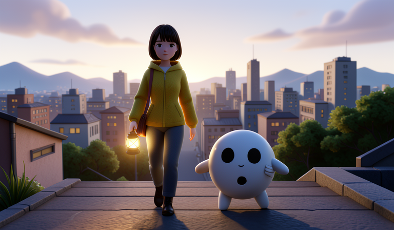
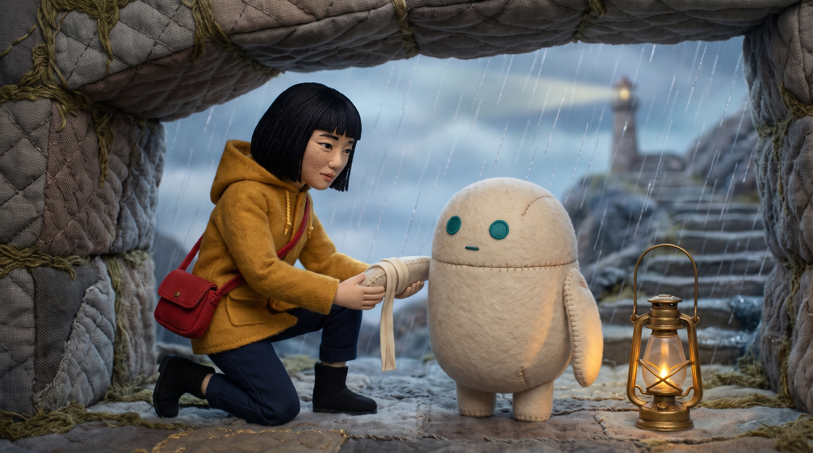

已完成 · 五分钟影片A COLLECTION OF CREATIVE EXPLORATIONS
所有作品，
一个入口。
从雨城的十种讲述，到模型试映、海报与换装。
打开作品，也找回每次创作的时间记录。
10部完整影片
5支模型样片
40张海报与换装变体
01 / SCREENING ROOM
同一个故事，不同的光。
《雨城最后一束光》 · 完整影片与短样片分别标记

已完成 · 6–10 秒试映样片五模型，五种新质感
丝线刺绣、透光皮影、蓝晒、真人实景与木雕木偶。以同一幕包扎情节，观察五个视频模型的创意表现。
02 / IMAGE COLLECTIONS
四组视觉实验，四十次变化。
初版与细化版各自保留，便于回看与比较
把 A / B 放在一起看
打开 40 张对照页 同一主题、同一随机种子的两版对照，附生成耗时与检查记录。
03 / CREATIVE LAB
从最初的尝试，到找到声音。
功能演示、原始素材与配音试听
04 / TAKE IT WITH YOU
把喜欢的作品带走。
当前已完成的交付包